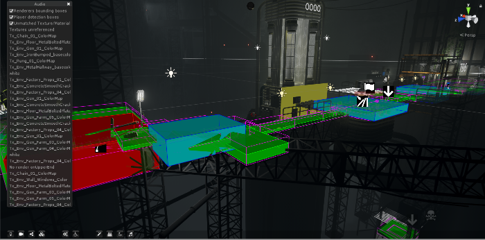

Bravospeed - Mobile
Une loterie gratuite sur mobile
Unity | C# | Mobile | Android | Apple | Analytics
 J’ai pour ce jeu créé plusieurs pages (tirage, boutique) et travaillé sur l’intégration des analytics et de l’AB testing.
Au fur et à mesure de l’avancement du projet, j’ai aussi réduit le poids de l’application et amélioré son frame rate via un usage poussé de plusieurs outils de profilage.
J’ai pour ce jeu créé plusieurs pages (tirage, boutique) et travaillé sur l’intégration des analytics et de l’AB testing.
Au fur et à mesure de l’avancement du projet, j’ai aussi réduit le poids de l’application et amélioré son frame rate via un usage poussé de plusieurs outils de profilage.
Fallback - PC
Dev Tools pour un roguelike nantais.
Fallback est un jeu en 2.5D de type rogue-like développé sur Unity par le studio Endroad et disponible sur Steam.Développeuse sur ce jeu, j’ai travaillé à l’intégration de l’audio, des UIs, et des analytics, sur le système de sauvegarde et l’ajout de la surcouche Steam (et ses succès).
Faciliter l'intégration de l'audio
Unity | C# | Wwise
Sur Fallback, les SFXs étaient créés et intégrés depuis Wwise. Deux types de sons étaient encore en attente : les musiques du jeu et le bruit des pas du joueur.
Les musiques changent en fonction des phases de jeu : hub, exploration, combat, menu…
Pour rationaliser les transitions entre musiques, j’ai créé un système centralisé fonctionnant autour d’une énumération. Cela a permis de supprimer les effets de bords et d’intégration rapidement et simplement les musiques ajoutées en cours de développement.
Pour ce qui est du bruit des pas du joueurs, le point de questionnement était de savoir comment associer le bon son au bon élément de décors. J’ai choisi de mettre en place un système d’audio surfaces : à chaque surface du niveau est associé un materiel audio. Cette association doit être automatique, de nouveaux éléments de décors et niveaux étant ajoutés régulièrement. Le processus de désignation se fait en plusieurs étape : a chaque texture est associé un matériau (bois, métal…), puis on lance le processus de création d’audio surface qui va chercher dans la scène tous les objets sur lequel le joueur pourrait être amené à marcher, récupère leurs matériaux et leur bounding boxes et à partir de ces deux éléments délimite dans la scène des zones bois, bétons etc. utilisées en jeu par le système audio. Les outils nécessaires à une retouche manuelle sont aussi disponibles.

Création d'UI
Unity | C#
Pour des raisons d’optimisation et de performance, un système d’UI custom via script a été créé pour le jeu. J’ai ajouté à ce système d’UI un ensemble d’outils de débogage et réalisé aussi plusieurs prototypes d’UIs.
Sauvegarder la progression du joueur | Analytics
Unity | C# | Asynchrone |
J’ai aussi mis en place le système de sauvegardes. Ce système permet de sauvegarder la progression du joueur, mais aussi les éléments d’analytics en cas d’absence de connexion internet. En fonction des besoins, les fichiers de sauvegarde pouvaient être en clair ou encodés sous un format binaire afin d’empêcher des triches éventuelles.
Enfin, j’ai intégré les analytics au jeu et mis en place les tableaux d’analyse et les entonnoirs dans la console web.
Page Steam du jeuLabo de potions – Réalité virtuelle
Pour faire découvrir la réalité virtuelle
Réalité Virtuelle | Leap Motion | Unity | C# | Education
Le labo de potion est un mini jeu pour Leap motion (capteur à main).
Le joueur est un sorcier qui doit réaliser une potion en versant les fioles dans le chaudron dans le bon ordre.
Ce jeu a été utilisé lors des interventions en milieu scolaire (primaire et collège) dans un but pédagogique. La découverte de la réalité augmentée et de la réalité virtuelle était alors au programme. L’objectif avec le labo de potion était de montrer que la réalité virtuelle ne se limite pas aux casques, mais que ce terme couvre en fait une multitude de dispositifs qui envoie le joueur dans un monde virtuel via une captation des mouvements du corps.
D’autres mini jeux présentaient la réalité augmentée et une expérience de réalité virtuelle sur casque.
Les présentations ont été appréciées à la fois par les élèves et les enseignants.
Weather Manager
 La pluie et le beau temps dans Unity
La pluie et le beau temps dans Unity
Unity | C# | Gestion de projet
Weather Manager était notre projet de fin d’études réalisé pour le studio Zero Games. Il permettait d’ajouter un système de météo à Unity. Effets météos, events et transitions étaient gérés depuis un node editor. Plusieurs shaders (neige, pluie…) ont aussi été créés.
Voir la Timelapse